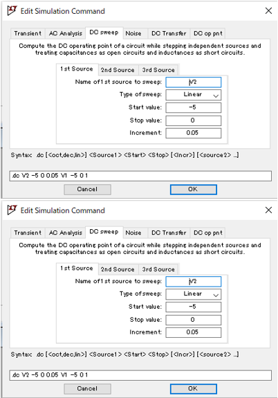

実習1 課題1: PMOSトランジスタの VDS-IDS 特性
実習では、NMOS トランジスタのVDS-IDS特性を確認しましたが、この課題では PMOS トランジスタの特性を解析します。V1とV2の電圧の向きに注意が必要です。上がマイナスになるように設定します。電圧源を配置したら Ctrl + R を押して回転させてください。
手順
1. PMOS のシンボルを配置
回路図に PMOS シンボルを追加します。
2. PMOS のパラメータ設定
PMOS シンボルを右クリックし、以下のパラメータを設定します。
Model Name: P_1u
Length (L): 1 μ
Width (W): 10 μ3. 回路図の作成
グランドと3つの電源(V1, V2, V3)を配置します。
4. 電源のパラメータ設定
各電源を右クリックし、以下の値を設定します。
V1: 0V
V2: 0V
V3: 5V5. 配線
ツールバーの配線アイコン  (もしくは F3)をクリックして、部品を正しく接続します。
(もしくは F3)をクリックして、部品を正しく接続します。
6. DC 解析の準備
メニューバーから Simulate > Edit Simulation Cmd を選択し、「DC Sweep」を設定します。
1st Source: VDS (V2)
2nd Source: VGS (V1)
7. 回路図ファイルの保存
File > Save As を使って、必ずドキュメント > LTspice 実習フォルダに「P_1u」という名前で保存してください。ツールバーの保存ボタン では「Draft」という名前で自動保存されてしまうため、必ず「File > Save As」を使用してください。
8. DC 解析の実行
ツールバーの実行  を押してシミュレーションを開始します。
を押してシミュレーションを開始します。
プローブの使用
カーソルが電流プローブ(先端が○になっている形状)に変わったことを確認し、ドレイン端子に配置してドレイン電流を測定します。間違えて電圧プローブを使用しないように注意してください。
シミュレーション結果
シミュレーション結果が正しく表示されない場合はプローブの位置や設定を再確認してください。